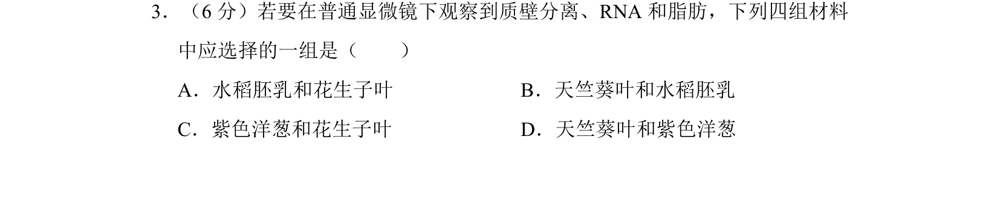
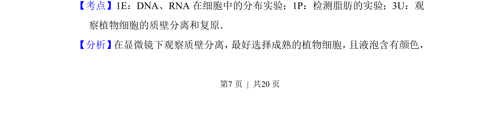
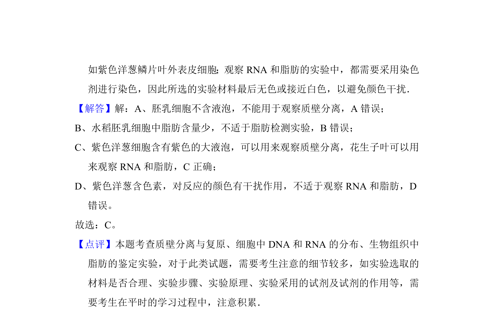

考点：质壁分离 RNA 脂肪 实验材料

考查质壁分离、RNA和脂肪的观察实验中材料选择。


📄 原 PDF 第 7 页：
素材/真题/吉林/2008-2024·（吉林）生物高考真题/2010年高考生物试卷（新课标）（解析卷）.pdf
3．（6分）若要在普通显微镜下观察到质壁分离、RNA和脂肪，下列四组材料 中应选择的一组是（ ） A．水稻胚乳和花生子叶B．天竺葵叶和水稻胚乳 C．紫色洋葱和花生子叶D．天竺葵叶和紫色洋葱
【考点】1E：DNA、RNA在细胞中的分布实验；1P：检测脂肪的实验；3U：观 察植物细胞的质壁分离和复原．菁优网版权所有 【分析】 在显微镜下观察质壁分离， 最好选择成熟的植物细胞， 且液泡含有颜色，